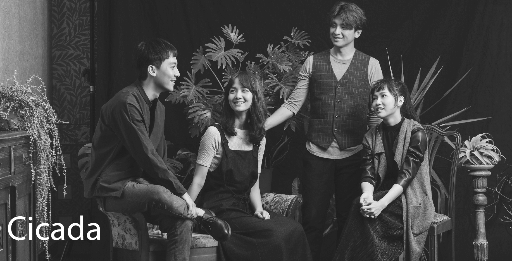
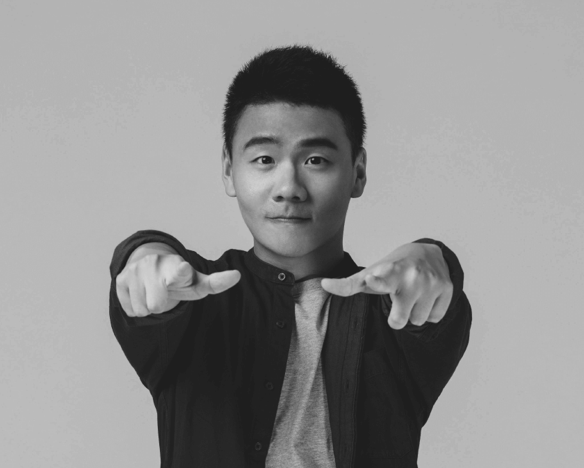
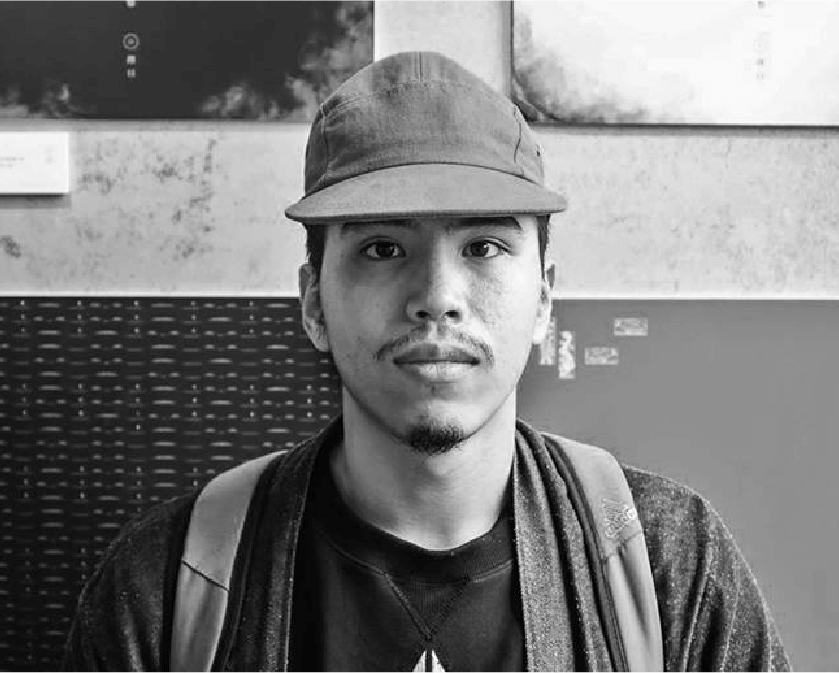
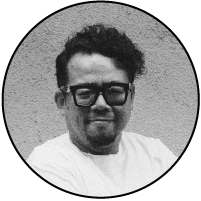
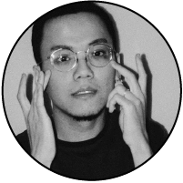
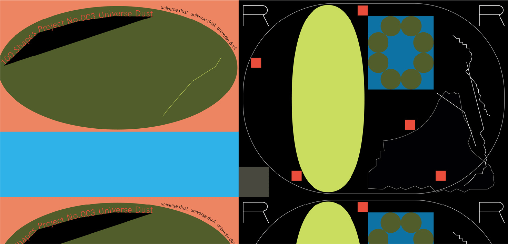
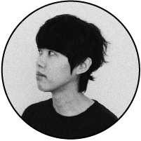

01
新秀交流晚會
新秀交流晚會
02
跨科際實驗講座
跨科際實驗講座
✷新秀交流晚會✷
跨領域交流的連結共鳴
跨領域交流的連結共鳴
採憑門票入場，邀請各校設計相關系所應屆畢業生，以及相關業界設計師、企業等一同參與。現場活動包含各校系歷屆優秀學長姐的論壇分享，除專業上的學術交流外，也規劃邀請樂團搭配動畫投影的表演秀橋段。
開場樂團嘉賓

論壇分享講者

阿翰po 影片
Youtuber
張 藝
影像創作者
黃鈺嵐 Bearly
動畫設計師

許哲維
梅林鬍子 資深互動工程師
✷跨科際實驗講座✷
多領域專業下的實務經驗
多領域專業下的實務經驗
採憑門票入場，以「跨科際」為命題，分為策展、互動、動畫、藝術及設計等多元面向，邀請包含奧茲藝術創辦人蘇仰志、叁式UltraCombos創辦人曾煒傑、3D動畫設計師SOMEI以及豪華朗機工藝術家張耿華等6組以上跨界陣容，談論多領域的專業實際經驗中，各自的實驗精神與磨練秘辛。
6.7
Fri.
13:00-14:30
創意策展背後的執行秘辛
策展 ✕ 企劃 ✕ 執行
此場講座主題，期望邀請三位知名策展團隊的核心角色，藉由對談形式與大家聊聊，每一檔光鮮亮麗的成功策展，背後無數個縝密細節，是如何從無到有的執行而成。以及探討三間各有不同特色的策展公司，在策劃過程中的相同與相異之處。
對談講座組合
李佳穎 Rita
前奧茲藝術 品牌企劃
現任精中教育集團 品牌企劃
現任精中教育集團 品牌企劃
翁熒熒 Ingrid
格式設計展策 營運經理
吳沛綺 Peggy
INCEPTION啟藝 專案經理
講者： 李佳穎／翁熒熒／吳沛綺
15:00-16:40
從新媒體到互動科技 柔情鐵漢的起家秘辛
新媒體藝術 ✕ 互動科技創新
從新媒體的藝術概念創作，到現今數位科技的互動創新體驗。聊聊各自在白手起家的歷程中，理想與思維如何轉變調整。在數位化的世代浪潮中，又如何創造一次又一次的創意革新。
與談主持人
對談講座組合
寶博士．葛如鈞
現任北科大互動設計系 專任助理教授
曾煒傑 Jay
叁式Ultra Combos 總監
宋恆 Sung Heng
如牧創新 總監
講者： 曾煒傑／宋恆
6.8
Sat.
10:30-12:00
動畫專案的概念設計與傳遞
3D影像創作 ✕ 動態概念設計
談商業專案與個人創作，如何在不同類型的動畫專案中，融合與表現動態設計的敘事概念與美感。以及藉由兩位在專案製作的經驗分享過程，聊聊兩地區動態產業的共通與差異之處，並延伸各自多元的經驗類型分享。
對談講座組合
孫世晟 SOMEI
動態設計師
劉承杰 Jie
空集設計 共同創辦人
講者： SOMEI／劉承杰
13:00-14:20
藝術魂下的社會推動意志
藝術背景 ✕ 社會推動
聊聊兩位在過往藝術背景的創作經歷，延伸討論從藝術到社會文化參與的轉化初衷。在各自不太乖的實驗精神下，如何實踐人文推動的信念與精神。交流對台灣社會與文化的期望與想像。
對談講座組合

蘇仰志 Ozzie
雜學校 創辦人
張耿華 Geng-hwa
豪華朗機工 共同創辦人
講者： 蘇仰志／張耿華
15:00-16:20
設！計！力！ 品牌未來大爆發！
網站設計 ✕ 資訊設計
淺談資訊設計與網站設計的關連性，以及各自在現今設計市場所扮演的重要性。兩者在與團隊的工作模式上有無一套設計流程。並以實際專案延伸分享彼此在商業與理想的平衡上如何拿捏與堅持。
對談講座組合
李明 Lee Ming
版塊設計 創辦人
張志祺 Chih-Chyi Chang
簡訊設計｜圖文不符共同創辦人
講者： 李明／張志祺
6.9
Sun.
10:30-12:00
走入獨立音樂人的感官宇宙
獨立音樂 ✕ 設計創作
兩位的作品大多與獨立音樂相關，也都有玩樂團的深刻經歷。聊聊各自在音樂與設計的融合轉化時，過程產生的火花與有趣反應，延伸探討平面設計之於獨立音樂的發展與連結性。
對談講座組合
李威 Wei Lee
平面設計師 美秀集團前鼓手

Zen Yun Zon
平面設計師 羣島主唱
講者： 李威／Zen Yun Zon
13:00-14:20
打開平面設計的方式
平面設計 ✕ 自由接案 ✕ 書籍裝幀
淺談作為獨立接案者，在平面設計產業中的實際所遇情況，並從兩位擅長與喜歡的作品案例中，以個人的角度與觀點，聊聊在現今數位世代的發展下，實體紙本的平面設計所扮演的獨特與重要性為何。

- 
對談講座組合
李君慈 Jyunc-Cih Li
平面設計師

楊文瞇 Rivers Yang
平面設計師
講者： 李君慈／楊文瞇
©2019 NTUT. ALL RIGHTS RESERVED